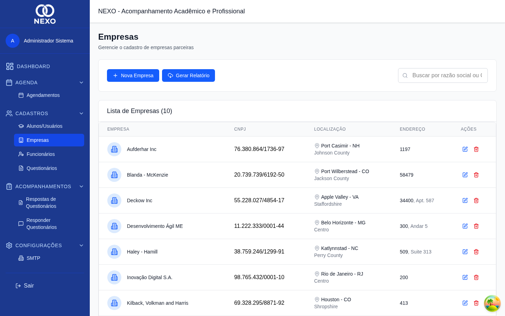
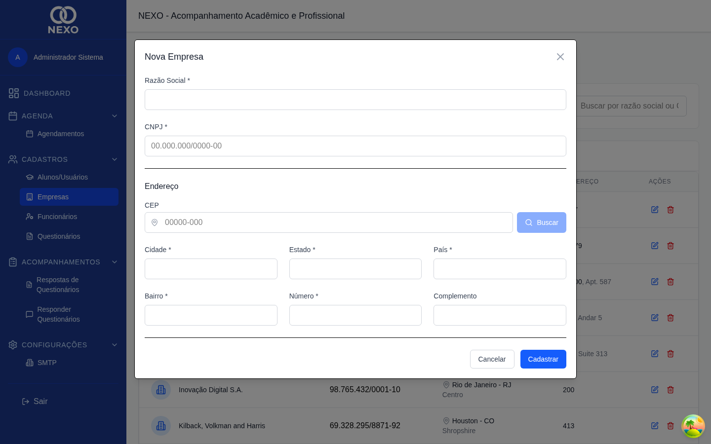
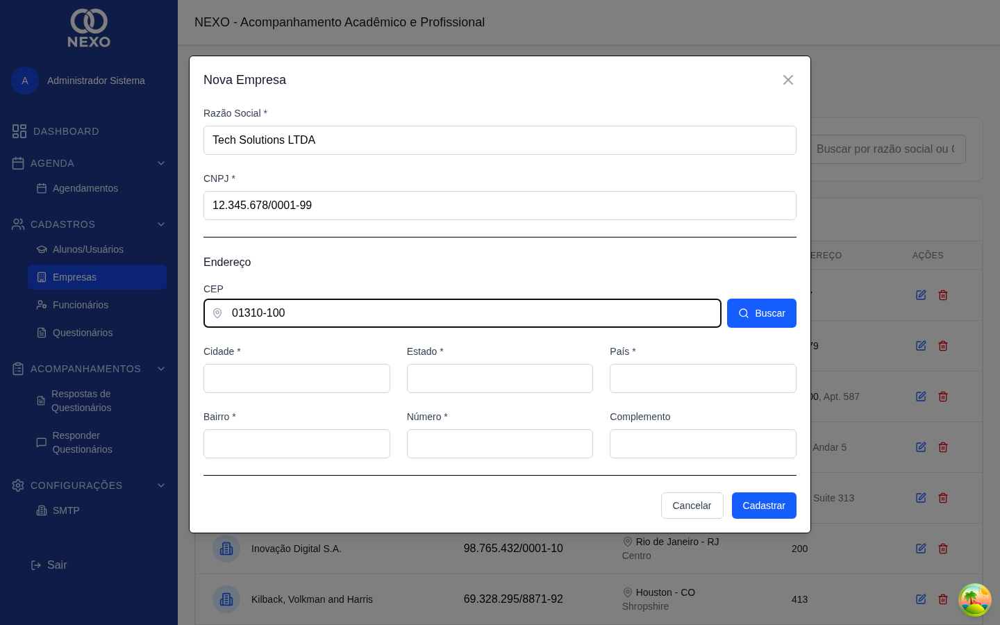

Empresas
O cadastro de empresas reúne todas as parceiras que podem receber encaminhamentos de alunos. Manter essas informações atualizadas mantém também os relatórios e o dashboard confiáveis.
| Ação | ADM | RH | COORD | PROF | DIR |
|---|---|---|---|---|---|
| Listar empresas | ✓ | ✓ | — | — | — |
| Criar / editar / excluir | ✓ | ✓ | — | — | — |
1. Acessar a lista
No menu lateral, abra Cadastros → Empresas. A lista mostra Razão Social, CNPJ, cidade e estado.

2. Cadastrar uma nova empresa
-
Clicar em "Nova Empresa"
Abre um formulário com Razão Social, CNPJ e endereço.

Formulário em branco. -
Preencher Razão Social e CNPJ
O CNPJ é formatado automaticamente (
00.000.000/0000-00) e validado antes de salvar.
CNPJ com máscara aplicada. -
Preencher o endereço
Comece pelo CEP — cidade, estado e bairro são preenchidos automaticamente quando o CEP é encontrado.
-
Salvar
Clique em Salvar. A empresa aparece na lista e já pode ser referenciada em encaminhamentos de alunos (veja Alunos).
3. Editar e excluir
As ações ficam à direita de cada linha. A exclusão é definitiva e é bloqueada caso a empresa esteja vinculada a encaminhamentos.
CNPJ é único. Antes de cadastrar, use a busca para verificar se a empresa já existe.